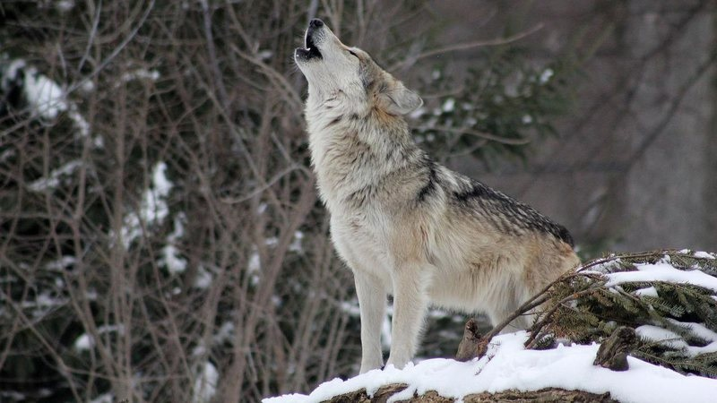
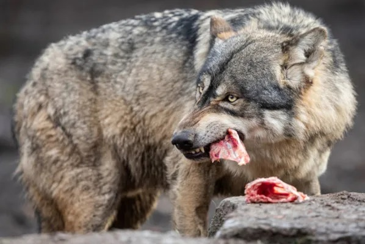
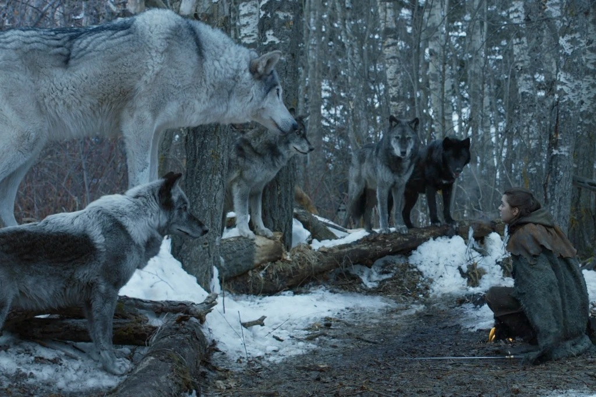

Eles se parecem com os cães domésticos, mas têm hábitos bem diferentes – vivem em grupos (as alcateias) e são ótimos caçadores ...

O termo lobo, de forma geral, é usado para se referir à espécie Canis lupus, também chamada de lobo cinzento...

Os lobos pré-históricos (aqueles de Game of Thrones) eram bem diferentes dos atuais
Quem assistiu a Game of Thrones vai se lembrar: no começo da primeira temporada, cada filho de Ned Stark (Sean Bean) ganhou um lobo gigante. O animal, presente no brasão da família, era inteligente, e servia tanto como bicho de estimação quanto como protetor.